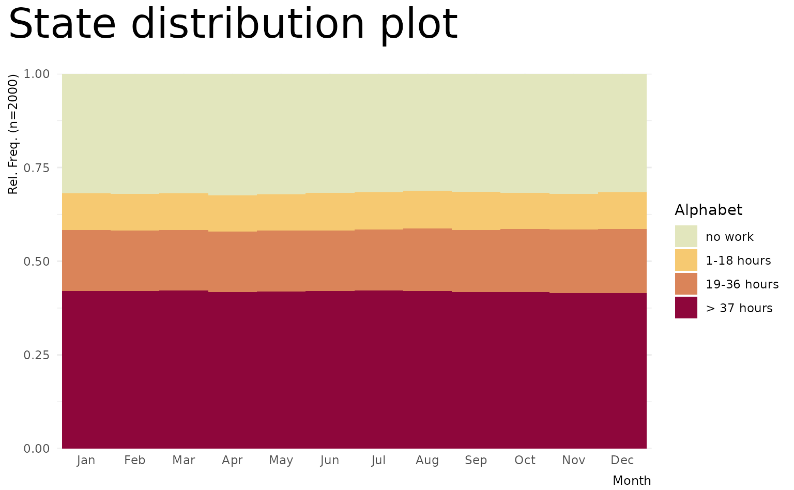
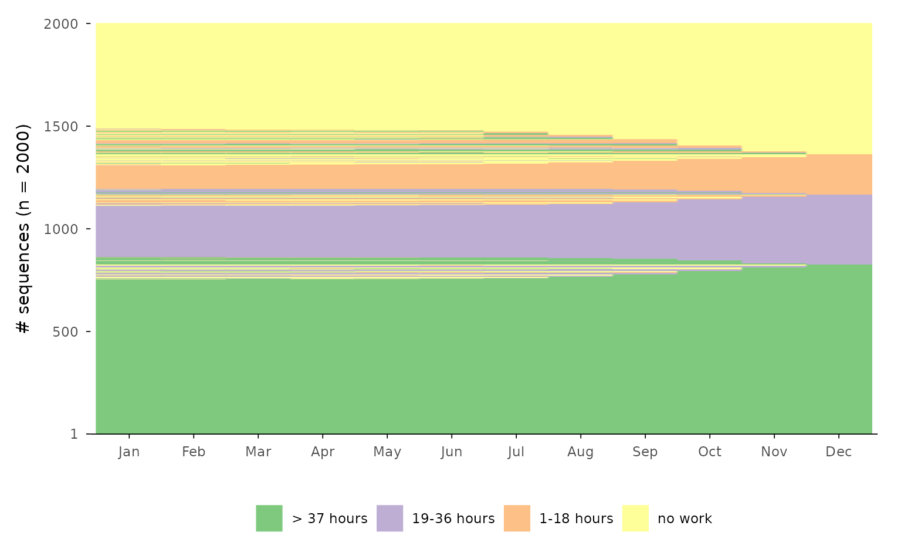
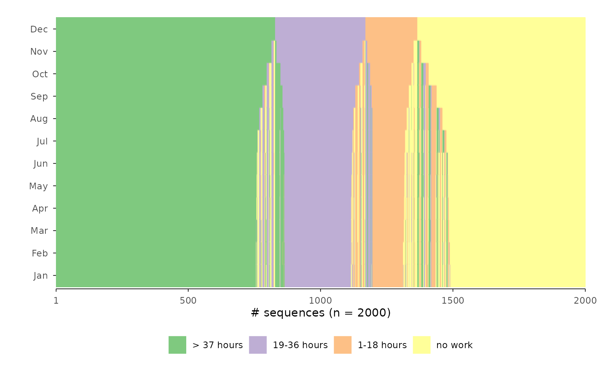

Prelude & Setup
Following Fasang and Liao (2014), we distinguish between sequence representation and summarization graphs. Summarization plots aggregate information from the data without displaying individual sequences. Given the complexity of sequence data, these plots focus on one or two dimensions of information stored in sequence data (Brzinsky-Fay, 2014). Common examples include transition plots, Kaplan-Meier curves, modal state plots, mean time plots, state distribution plots, and entropy plots (Fasang & Liao, 2014; Raab & Struffolino, 2022).
{ggseqplot}
includes five types of summarization plots:
- State distribution plots (
ggseqdplot) - Entropy line plots (
ggseqplot) - Modal state sequence plot (
ggseqmsplot) - Mean time plot (
ggseqmtplot) - Transition rate plots (
ggseqtrplot)
In contrast to summarization plots, representation plots visualize actually observed sequences. The most basic version is the sequence index plot, which displays all sequences in the dataset. However, this approach becomes impractical with large datasets due to overplotting—individual sequences may overlap, making the visualization misleading. To address this, alternative representations that display only a subset of sequences have been proposed.
{ggseqplot}
supports both full and subset-based representation plots, offering the
following plot types:
- Sequence index plot (
ggseqiplot) - Sequence frequency plot (
ggseqfplot) - Representative sequence plot (
ggseqrplot) - Relative frequency sequence plot (
ggseqrfplot)
For a deeper discussion of sequence data visualization, see Brzinsky-Fay (2014), Fasang and Liao (2014) and Chapter 2 of Raab & Struffolino (2022).
With the exception of transition rate plots, all of the plots listed
above can also be produced with {TraMineR}. In fact, {TraMineR} typically offers more
customization options—but only through base R’s plotting system. If you
are comfortable using base R graphics, there may be little reason to
switch to {ggseqplot}.
However, {ggseqplot}
was developed precisely because many R users today prefer {ggplot2} to base R’s plot
environment for visualizing data. {TraMineR} (Gabadinho et al., 2011) was developed before {ggplot2} (Wickham, 2016) was as popular as it is today
and back then many users were more familiar with coding base R plots.
Today, most researchers and students are more familiar with {ggplot2} and would rather build on
existing skills instead of learning how to refine base R plots just for
sequence visualizations.
This vignette demonstrates how sequence objects created via
TraMineR::seqdef are reshaped to plot them as ggplot2-typed
figures using {ggseqplot}.
It outlines which functions from {TraMineR} and the {ggplot2} universe are involved in
generating the visualizations.
The vignette further illustrates how the appearance of plots produced
with {ggseqplot}
can be customized using {ggplot2} functions and extensions.
Setup example
We begin by loading the required libraries and preparing the sequence
data to be visualized. The examples are based on data sets and examples
provided by the {TraMineR} package.
Click to show code for installing and loading required packages
## ~~~~~~~~~~~~~~~~~~~~~~~~~~~~~~~~~~~~~~~~~~~~~~~~~~~~~~~
## Load and download (if necessary) required packages ----
## ~~~~~~~~~~~~~~~~~~~~~~~~~~~~~~~~~~~~~~~~~~~~~~~~~~~~~~~
## Save package names as a vector of strings
pkgs <- c("colorspace", # for using colors palettes
"forcats", # for dropping unused factor levels with `fct_drop`
"ggh4x", # for proportional panel sized with `force_panelsizes`
"ggplot2", # for using all the ggplot2 functions
"ggthemes", # for getting access to the canva_palettes
"patchwork", # for working with plot types built with patchwork
"purrr", # used in the grouped rplot example
"TraMineR") # the ultimate sequence analysis suite
## Install uninstalled packages
lapply(pkgs[!(pkgs %in% installed.packages())],
install.packages, repos = getOption("repos")["CRAN"])
## Load all packages to library and adjust options
lapply(pkgs, library, character.only = TRUE)
## Don't forget to load ggseqplot
library(ggseqplot)
## ~~~~~~~~~~~~~~~~~~~~~~~~~~~~~~~~~~~~~~~~~~~~~~~~~~~~~~~~~~~
## Creating state sequence objects from example data sets ----
## ~~~~~~~~~~~~~~~~~~~~~~~~~~~~~~~~~~~~~~~~~~~~~~~~~~~~~~~~~~~
## biofam data
data(biofam)
biofam.lab <- c("Parent", "Left", "Married", "Left+Marr",
"Child", "Left+Child", "Left+Marr+Child", "Divorced")
biofam.seq <- seqdef(biofam[501:600, ], 10:25, # we only use a subsample
labels = biofam.lab,
weights = biofam$wp00tbgs[501:600])
## actcal data
data(actcal)
actcal.lab <- c("> 37 hours", "19-36 hours", "1-18 hours", "no work")
actcal.seq <- seqdef(actcal,13:24,
labels=actcal.lab)
## ex1 data
data(ex1)
ex1.seq <- seqdef(ex1, 1:13,
weights=ex1$weights)Note: The default figure size in this document is
fig.width=8, fig.height=4.94
Technicalities
All functions in {ggseqplot}
follow a similar structure: they take a state sequence object—created
with TraMineR::seqdef—as their starting point. The
functions either operate directly on the sequence data or use other {TraMineR} functions, such as
TraMineR::seqstatd, to derive the information to be
visualized.
Internally, {ggseqplot}
reshapes the data into a tidy (long) format before plotting them with {ggplot2} functions. This reshaping
step is typically necessary for creating layered and faceted graphics in
the grammar of graphics framework.
The following example demonstrates this process using a state distribution plot. First, we compute the cross-sectional state distributions across the sequence positions:
seqstatd(actcal.seq)
#> [State frequencies]
#> jan00 feb00 mar00 apr00 may00 jun00 jul00 aug00 sep00 oct00 nov00 dec00
#> A 0.421 0.420 0.421 0.417 0.419 0.42 0.42 0.42 0.42 0.418 0.414 0.415
#> B 0.162 0.162 0.162 0.162 0.162 0.16 0.16 0.17 0.17 0.169 0.170 0.171
#> C 0.098 0.098 0.098 0.097 0.097 0.10 0.10 0.10 0.10 0.096 0.096 0.098
#> D 0.320 0.321 0.320 0.324 0.322 0.32 0.32 0.31 0.31 0.318 0.320 0.317
#>
#> [Valid states]
#> jan00 feb00 mar00 apr00 may00 jun00 jul00 aug00 sep00 oct00 nov00 dec00
#> N 2000 2000 2000 2000 2000 2000 2000 2000 2000 2000 2000 2000
#>
#> [Entropy index]
#> jan00 feb00 mar00 apr00 may00 jun00 jul00 aug00 sep00 oct00 nov00 dec00
#> H 0.9 0.9 0.9 0.9 0.9 0.9 0.9 0.91 0.91 0.9 0.91 0.91When calling ggseqdplot, these distributional data are
internally reshaped into a long-format dataset, where each row
represents the (weighted) relative frequency of a specific state at a
specific sequence position.
For example, the actcal.seq data contain sequences of
length 12 with an alphabet of 4 states. The reshaped dataset used for
plotting will therefore consist of
rows. If a grouping variable is provided, the resulting dataset will
contain 48 rows per group. To inspect this internal data structure,
assign the plot output to an object. The resulting list object stores
the data as its first element (named data).
dplot <- ggseqdplot(actcal.seq)
dplot$data
#> # A tibble: 48 × 6
#> group state k x value grouplab
#> <fct> <fct> <fct> <fct> <dbl> <fct>
#> 1 1 > 37 hours jan00 1 0.421 Rel. Freq. (n=2000)
#> 2 1 > 37 hours feb00 2 0.420 Rel. Freq. (n=2000)
#> 3 1 > 37 hours mar00 3 0.422 Rel. Freq. (n=2000)
#> 4 1 > 37 hours apr00 4 0.418 Rel. Freq. (n=2000)
#> 5 1 > 37 hours may00 5 0.420 Rel. Freq. (n=2000)
#> 6 1 > 37 hours jun00 6 0.42 Rel. Freq. (n=2000)
#> 7 1 > 37 hours jul00 7 0.422 Rel. Freq. (n=2000)
#> 8 1 > 37 hours aug00 8 0.420 Rel. Freq. (n=2000)
#> 9 1 > 37 hours sep00 9 0.418 Rel. Freq. (n=2000)
#> 10 1 > 37 hours oct00 10 0.418 Rel. Freq. (n=2000)
#> # ℹ 38 more rowsOnce the data are in the correct shape, {ggseqplot}
uses standard {ggplot2} functions to create the
visualizations. In the case of state distribution plots, for instance,
ggseqdplot renders stacked bar charts for each sequence
position using ggplot2::geom_bar.
The following table summarizes the core internal function calls for
the various plot types available in {ggseqplot}:
| ggseqplot function | TraMineR function | ggplot2 geoms and extensions |
|---|---|---|
ggseqdplot |
TraMineR::seqstatd |
ggplot2::geom_baroptional: geom_line
|
ggseqeplot |
TraMineR::seqstatd |
ggplot2::geom_line |
ggseqmsplot |
TraMineR::seqmodst |
ggplot2::geom_bar |
ggseqmtplot |
TraMineR::seqmeant |
ggplot2::geom_bar |
ggseqtrplot |
TraMineR::seqtrate |
ggplot2::geom_tile |
ggseqiplot |
TraMineR::seqformat |
ggplot2::geom_rect |
ggseqfplot |
TraMineR::seqtab |
ggplot2::geom_rect{ggh4x} (for the axis labeling if group
has been specified) |
ggseqrplot |
TraMineR::seqrep |
ggplot2::geom_rectggrepel::geom_text_repel{ggtext} (for optional colored axis
labels){patchwork} (to combine plots) |
ggseqrfplot |
TraMineR::seqrfplot |
ggplot2::geom_rectggplot2::geom_boxplot{patchwork} (to combine plots) |
Most plots created with {ggseqplot}
behave like regular ggplots. You can customize them by adding themes,
adjusting scales, or using other standard {ggplot2} syntax via
+.
Representative sequence plots and relative frequency sequence plots,
however, behave differently because they are composed of multiple
subplots which are arranged using the {patchwork} library. The following
section illustrates how the appearance of the plots can be changed.
Changing the appearance of plots
The default case
As mentioned above, most plots rendered by {ggseqplot}
are of class c("gg", "ggplot") and can be customized just
like any other plot created with {ggplot2}
Example 1: State distribution plot
We begin with a simple state distribution plot using the sequence
object actcal.seq, without modifying the default
settings.
ggseqdplot(actcal.seq)Next, we demonstrate how to refine the plot using a variety of {ggplot2} functions and extensions. As
with any other {ggplot2} plot, the appearance of plots
generated with {ggseqplot}
functions can be extensively customized:
ggseqdplot(actcal.seq) +
scale_fill_discrete_sequential("heat") +
scale_x_discrete(labels = month.abb) +
labs(title = "State distribution plot",
x = "Month") +
guides(fill=guide_legend(title="Alphabet")) +
theme_minimal(base_family = "") +
theme(plot.title = element_text(size = 30, margin=margin(0,0,20,0)),
plot.title.position = "plot",
axis.title.x = element_text(hjust = 1,
vjust = -1),
axis.title.y = element_text(hjust = 1,
vjust = 1),
axis.title = element_text(size = 9))
In the following example, we use two ggseqdplot calls to
create plots of the same data, one with and one without weights. We also
display entropy lines (geom_line) and combine the two plots
using the {patchwork} package (Pedersen, 2020).
# Save plot using weights
p1 <- ggseqdplot(ex1.seq,
with.entropy = TRUE) +
ggtitle("Weighted data")
# Save same plot without using weights
p2 <- ggseqdplot(ex1.seq,
with.entropy = TRUE,
weighted = FALSE) +
ggtitle("Unweighted data")
# Arrange and refine plots using patchwork
p1 + p2 +
plot_layout(guides = "collect") &
scale_fill_manual(values= canva_palettes$`Fun and tropical`[1:4]) &
theme_minimal(base_family = "") &
theme(plot.title = element_text(size = 20,
hjust = 0.5),
legend.position = "bottom",
legend.title = element_blank(),
axis.title.x = element_text(hjust = 1,
vjust = -1),
axis.title.y = element_text(hjust = 1,
vjust = 1),
axis.title = element_text(size = 9))
Example 2: Transition rate plot
In the next set of examples, we refine plots generated by
ggseqtrplot, which internally calls
TraMineR::seqtrate to compute the transition rates between
states. These rates are returned in a symmetrical matrix and then
reshaped into long format within ggseqtrplot to be plotted
with ggplot2::geom_tile.
We begin with a basic example that visualizes transition rate matrices for two groups defined by the sex variable The output is a faceted plot visualizing two transition rate matrices of DSS sequence data.
ggseqtrplot(actcal.seq,
group = actcal$sex)
#> [>] computing transition probabilities for states A/B/C/D ...
#> [>] computing transition probabilities for states A/B/C/D ...
In the second example, we add customizations and utilize once again
the {patchwork} library to compose a figure
that compares the transition matrices of the same sequence data in STS
and DSS format.
We set x_n.dodge = 2 to prevent overlapping x-axis
labels, reduce the font size of the value labels displayed within the
tiles (labsize = 7), and set dss = FALSE to
switch to the STS format.
p1 <- ggseqtrplot(biofam.seq,
dss = FALSE,
x_n.dodge = 2,
labsize = 7) +
ggtitle("STS Sequences") +
theme(plot.margin = unit(c(5,10,5,5), "points"))
#> [>] computing transition probabilities for states 0/1/2/3/4/5/6/7 ...
p2 <- ggseqtrplot(biofam.seq,
x_n.dodge = 2,
labsize = 7) +
ggtitle("DSS Sequences") +
theme(plot.margin = unit(c(5,5,5,10), "points"))
#> [>] computing transition probabilities for states 0/1/2/3/4/5/6/7 ...
p1 + p2 &
theme(plot.title = element_text(size = 20,
hjust = 0.5))
In contrast to the grouped plot above, the combined figure contains
duplicated y-axis labels and titles. These can be removed using standard
ggplot2::theme() arguments:
p2 <- p2 +
theme(axis.text.y = element_blank(),
axis.title.y = element_blank())
p1 + p2 &
theme(plot.title = element_text(size = 20,
hjust = 0.5))
Example 3: Sequence index plots of illustrative (very few) sequences
{TraMineR} offers two types of sequence
index plots: TraMineR::seqiplot for displaying a small
selection of sequences (typically no more than 10), and
TraMineR::seqIplot for plotting the full set of sequences.
The former adds white space between the displayed sequences, making it
well suited for illustrative purposes—for example, when showcasing a few
hand-picked sequences in publications or teaching materials. While {ggseqplot}
does not provide built-in spacing between sequences, a similar effect
can be achieved with a small trick: by assigning each sequence to its
own group via the group argument, ggseqiplot uses
ggplot2::facet_wrap to place each sequence in a separate
panel, thereby visually separating them.
In the example below, we display five sequences
(biofam.seq[2:6,]) as a faceted plot, where each sequence
forms its own group (group = 1:5) and is shown in a
separate panel arranged in a single column
(facet_ncol = 1). The remainder of the code applies visual
fine-tuning: group labels are moved to the left
(strip.position = "left") and rotated
(strip.text.y.left = element_text(angle = 0)); superfluous
axis elements—such as y-axis labels
(axis.text.y = element_blank()), ticks
(axis.ticks.y = element_blank()), and the axis title
(labs(y = NULL))—are removed; and the white space between
sequences is slightly reduced by adjusting vertical panel spacing
(panel.spacing.y = unit(1.5, "lines")).
# plot a subset of 5 sequences from biofam.seq
ggseqiplot(biofam.seq[2:6,],
group = 1:5,
facet_ncol = 1,
strip.position = "left",
no.n = TRUE,
border = TRUE,
weighted = FALSE) +
labs(y = NULL) +
theme(strip.text.y.left = element_text(angle = 0),
panel.spacing.y = unit(1.5, "lines"),
axis.text.y = element_blank(),
axis.ticks.y = element_blank())
Example 4: Flipping coordinates
Another way to adjust the appearance of plots rendered by {ggseqplot}
is to flip their coordinates—an approach commonly used in the {ggplot2} ecosystem.
In the example below, we illustrate coordinate flipping for both a mean time plot and a sequence index plot. For each plot type, we show the default version followed by its flipped counterpart:
## default plot
ggseqmtplot(actcal.seq, no.n = TRUE, error.bar = "SE") 
## flipped version
ggseqmtplot(actcal.seq, no.n = TRUE, error.bar = "SE") +
coord_flip() +
theme(axis.text.y=element_blank(),
axis.ticks.y = element_blank(),
panel.grid.major.y = element_blank(),
legend.position = "top")While the flipped version above may be more in line with some users’ aesthetic preferences, flipping coordinates for sequence index plots is a more opinionated design choice. Most researchers display time along the horizontal axis. However, if you prefer time to run vertically—bottom to top, as in Piccarreta and Lior (Piccarreta & Lior, 2010)—this preference is easily accommodated:
## default plot
ggseqiplot(actcal.seq, sortv = "from.end") +
scale_x_discrete(labels = month.abb)
#> Scale for x is already present.
#> Adding another scale for x, which will replace the existing scale.
## flipped version
ggseqiplot(actcal.seq, sortv = "from.end") +
scale_x_discrete(labels = month.abb) +
coord_flip()
#> Scale for x is already present.
#> Adding another scale for x, which will replace the existing scale.
Example 5: Proportional panel sizes for grouped sequence plots
A common use case—especially in the context of cluster analyses—is to display grouped sequence plots with panel sizes that reflect the relative size of each group. This makes the visualization more informative, as it visually communicates the prevalence of each group.
In the following example, we illustrate this approach using
actcal$sex as the grouping variable. As before, the
group argument is used to split the data into separate
panels arranged in a single column (facet_ncol = 1). To
scale the height of each panel proportionally to the group size, we
compute the relative frequencies using:
The fct_drop() function ensures that only those factor
levels actually present in the data are considered when tabulating group
sizes—this avoids reserving space for empty panels corresponding to
unused levels. We then pass the resulting proportions to
ggh4x::force_panelsizes() via the rows
argument. This function adjusts the panel heights accordingly, so that
larger groups occupy more vertical space in the plot. Finally, we reduce
the spacing between panels using
theme(panel.spacing = unit(1, "lines")) for a more compact
appearance.
## use ggh4x::force_panelsizes to get proportional panels
ggseqiplot(actcal.seq,
sortv = "from.end",
group = actcal$sex,
facet_ncol = 1) +
force_panelsizes(rows = hghts) +
theme(panel.spacing = unit(1, "lines"))
The special case of combined plots
Two types of plots differ from the standard behavior of {ggseqplot}
functions: they are composed by two subplots, which are arranged into a
single figure using the {patchwork} library. Because of this
composition, their appearance cannot be adjusted in exactly the same way
as plots returned directly as ggplot objects. For more
details on the functionality and syntax of {patchwork},
we refer readers to the to the package documentation.
Example 6: Annotation and themes
Despite their special structure, many aspects of combined {patchwork} plots can still be
customized in ways familiar from {ggplot2}. For example, themes and plot
annotations can be modified using the & operator
(instead of +, which is used for standard
ggplot objects).
## compute dissimilarity matrix required for plot
diss <- seqdist(biofam.seq, method = "LCS")
#> [>] 100 sequences with 8 distinct states
#> [>] creating a 'sm' with a substitution cost of 2
#> [>] creating 8x8 substitution-cost matrix using 2 as constant value
#> [>] 76 distinct sequences
#> [>] min/max sequence lengths: 16/16
#> [>] computing distances using the LCS metric
#> [>] elapsed time: 0.017 secs
## Relative Frequency Sequence Plot
## default version
ggseqrfplot(biofam.seq, diss = diss, k = 12)
#> [>] Using k=12 frequency groups with grp.meth='prop'
#> [>] Pseudo/medoid-based-R2: 0.367766
#> [>] Pseudo/medoid-based-F statistic: 5.268049, p-value: 1.655783e-06
## adjusted version
ggseqrfplot(biofam.seq, diss = diss, k = 12) &
theme_minimal(base_family = "") &
theme(legend.position = "bottom",
legend.title = element_blank(),
plot.title = element_text(size = 12),
axis.title.x = element_text(hjust = 1,
vjust = -1),
axis.title.y = element_text(hjust = 1,
vjust = 1),
axis.title = element_text(size = 9)) &
plot_annotation(title = "Relative Frequency Sequence Plot")
#> [>] Using k=12 frequency groups with grp.meth='prop'
#> [>] Pseudo/medoid-based-R2: 0.367766
#> [>] Pseudo/medoid-based-F statistic: 5.268049, p-value: 1.655783e-06
If you want to manipulate the appearance of a specific subplot, however, the default approach might not work as expected. For example, if you aim to change the x-axis labels of the index plot, the following code will not yield the intended result:
ggseqrfplot(biofam.seq, diss = diss, k = 12) +
scale_x_discrete(labels = 15:30)
#> [>] Using k=12 frequency groups with grp.meth='prop'
#> [>] Pseudo/medoid-based-R2: 0.367766
#> [>] Pseudo/medoid-based-F statistic: 5.268049, p-value: 1.655783e-06
In this case, scale_x_discrete() will be applied to the
boxplot (i.e., the last plot constructed in the combined object), not to
the index plot. This behavior arises because the + operator
affects the final ggplot object passed into the patchwork
layout.
To adjust the appearance of individual subplots within a combined plot, you need to first save the composite plot object, access its components, and then modify them individually before reassembling the full plot.
## save & view original plot
p <- ggseqrfplot(biofam.seq, diss = diss, k = 12)
#> [>] Using k=12 frequency groups with grp.meth='prop'
#> [>] Pseudo/medoid-based-R2: 0.367766
#> [>] Pseudo/medoid-based-F statistic: 5.268049, p-value: 1.655783e-06
p
## change appearance of sub-plots
## first component: index plot
p[[1]] <- p[[1]] +
scale_x_discrete(labels = 15:30)
#> Scale for x is already present.
#> Adding another scale for x, which will replace the existing scale.
## second component: boxplot
p[[2]] <- p[[2]] + labs(title = "Changed title")
## adjusted plot
pExample 7: The complex case of grouped rplots
Things become a bit more complex when working with grouped representative sequence plots. In such plots, each group contributes two subplots: one showing information on the “quality” of the representative sequences (e.g., frequency, coverage, or centrality), and another displaying the corresponding index plots.
If you want to adjust the x-axis labels, for example, you must specifically target the index plots, which appear in the second row of the combined layout. The subplots are arranged by row, so for a two-group example, the index plots correspond to subplots 3 and 4.
To apply the desired changes, you need to extract these components, modify them as needed, and then re-plot the final figure.
## Compute a pairwise dissimilarity matrix
diss <- seqdist(actcal.seq, method = "LCS")
#> [>] 2000 sequences with 4 distinct states
#> [>] creating a 'sm' with a substitution cost of 2
#> [>] creating 4x4 substitution-cost matrix using 2 as constant value
#> [>] 186 distinct sequences
#> [>] min/max sequence lengths: 12/12
#> [>] computing distances using the LCS metric
#> [>] elapsed time: 0.277 secs
## original plot
p <- ggseqrplot(actcal.seq,
diss = diss,
nrep = 3,
group = actcal$sex)
#> [>] number of objects (sum of weights): 884
#> [>] max. distance: 24
#> [>] neighborhood radius: 2.4
#> [>] 3 representative(s) selected
#> [>] 80 distinct sequence(s)
#> [>] number of objects (sum of weights): 1116
#> [>] max. distance: 24
#> [>] neighborhood radius: 2.4
#> [>] 3 representative(s) selected
#> [>] 144 distinct sequence(s)
p
## adjusted sequence index subplots
p[[3]] <- p[[3]] +
scale_x_discrete(labels = month.abb)
#> Scale for x is already present.
#> Adding another scale for x, which will replace the existing scale.
p[[4]] <- p[[4]] +
scale_x_discrete(labels = month.abb)
#> Scale for x is already present.
#> Adding another scale for x, which will replace the existing scale.
p
Example 8: What about grouped rfplots?
Grouped representative frequency plots are currently not
implemented in ggseqrfplot and must be assembled
manually using the {patchwork} library.
In the following example, we:
- Create rfplots for each group (here: “Men” and “Women”),
- Slightly misuse
{patchwork}’s tag annotation to assign group-specific labels to the first plot in each row, - Remove the legend from the upper plot panel (
p$man), and - Combine the two plots in a final stacked figure using a nested patchwork layout.
Technically, the resulting plot is a nested patchwork plot. According
to the {patchwork} documentation,
[i]t is important to note that plot annotations only have an effect on the top-level patchwork. Any annotation added to nested patchworks are (currently) lost. If you need to have annotations for a nested patchwork you’ll need to wrap it in wrap_elements() with the side-effect that alignment no longer works.1
For this reason, we refrained from using
patchwork::plot_annotation or ggplot2::ggtitle
to add group titles and used plot tags instead.
diss <- seqdist(biofam.seq, method = "LCS")
#> [>] 100 sequences with 8 distinct states
#> [>] creating a 'sm' with a substitution cost of 2
#> [>] creating 8x8 substitution-cost matrix using 2 as constant value
#> [>] 76 distinct sequences
#> [>] min/max sequence lengths: 16/16
#> [>] computing distances using the LCS metric
#> [>] elapsed time: 0.016 secs
sex <- biofam[501:600, "sex"]
p <- map2(
levels(sex), # input x
c("Men", "Women"), # input y
function(x, y) {
p <- ggseqrfplot(biofam.seq[sex == x,],
diss = diss[sex == x,sex == x],
k = 12)
p[[1]] <- p[[1]] + labs(tag = y)
return(p)
}
)
#> [>] Using k=12 frequency groups with grp.meth='prop'
#> [>] Pseudo/medoid-based-R2: 0.5448432
#> [>] Pseudo/medoid-based-F statistic: 3.408139, p-value: 0.003407164
#> [>] Using k=12 frequency groups with grp.meth='prop'
#> [>] Pseudo/medoid-based-R2: 0.5263291
#> [>] Pseudo/medoid-based-F statistic: 5.687386, p-value: 4.537004e-06
names(p) <- levels(sex)
(p$man & theme(legend.position = "none")) / p$woman
This approach gives you full control over the layout and design of
grouped rfplots, even in the absence of direct support in the
ggseqrfplot function.